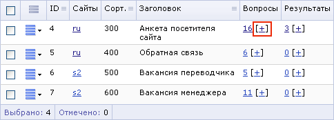
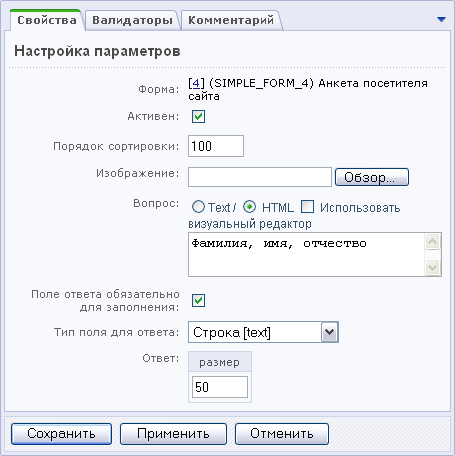

Создание вопросов веб-формы
Под вопросом формы понимается совокупность самого текста вопроса и полей ввода, предназначенных для ответа на него. Для того чтобы создать вопросы формы, выполните следующее:
- Откройте административный раздел: Сервисы > Веб-формы > Настройка форм.
- Для формы, вопросы к которой вы хотите создать, в столбце Вопросы нажмите ссылку [+].

- На открывшейся форме отметьте, активен ли вопрос.
- Укажите порядок сортировки.
- Установите флажок в поле Обязателен, если ответ на данный вопрос обязателен.
- Если необходимо, загрузите изображение для вопроса с локального компьютера.
- Введите текст вопроса в виде обычного текста или HTML-кода. При редактировании можно использовать HTML-редактор.

- Выберите тип поля для ответа на данный вопрос. В зависимости от выбранного типа поля укажите необходимые параметры в поле Ответ (в данном случае указана длина поля для ответа на вопрос).
- С помощью закладки Валидаторы можете назначить имеющиеся валидаторы для выбранного типа поля.
- Откройте закладку Комментарий и введите служебный комментарий к вопросу.
- Для сохранения вопроса нажмите кнопку Сохранить.